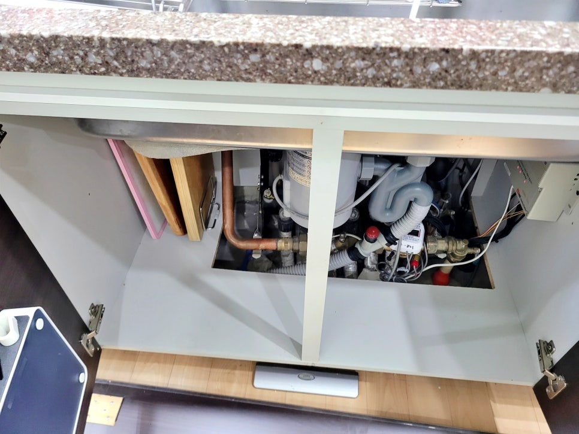
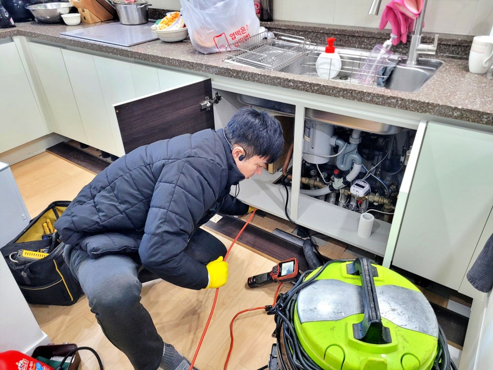
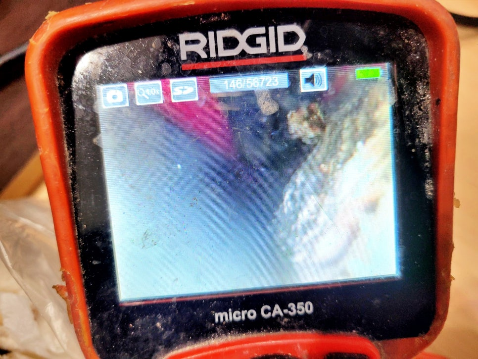
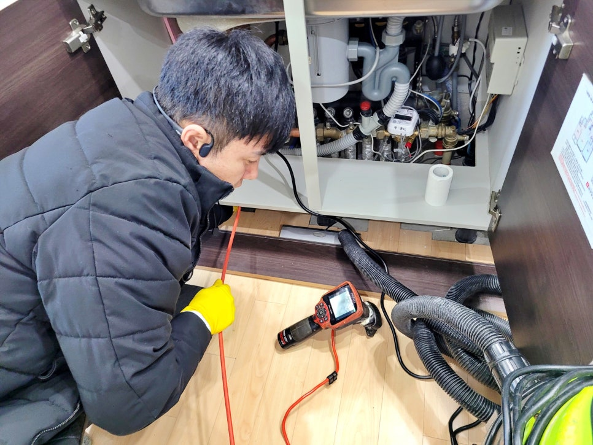
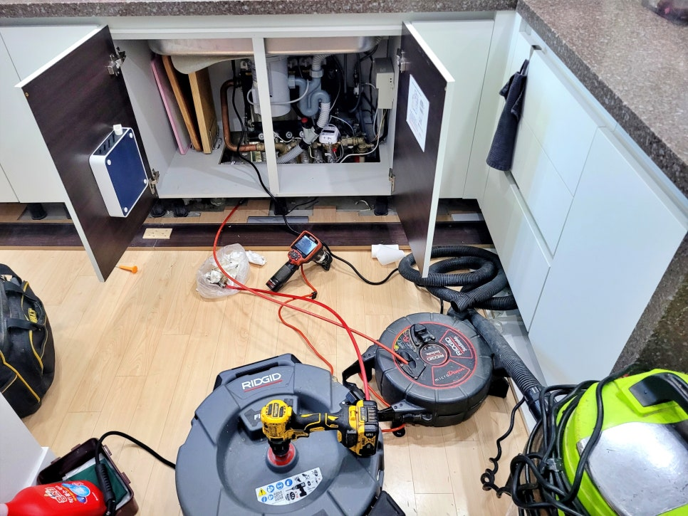
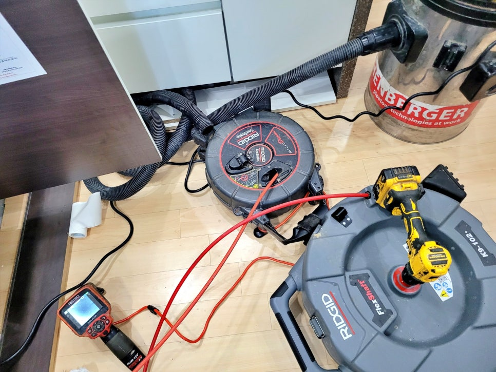

🏠 용인 풍덕천동 싱크대 배관막힘, 하수구 청소로 기름막힘 뚫어드림
용인 풍덕천동 싱크대막힘 전문 시공 후기

📋 작업 개요
- 위치: 용인 풍덕천동, 풍덕천동, 용인
- 서비스 유형: 싱크대막힘, 하수구막힘, 배관막힘, 뚫는업체, 배관청소
- 작업 일시: 2026. 2. 17. 11:03
- 업체명: 하수구수사대 (010-5615-2118)
🔍 문제 상황
용인 풍덕천동 싱크대 배관막힘 전문,
하수구 배관청소로 기름막힘 시원하게
뚫어드림
안녕하세요?
용인 수지구 풍덕천동 싱크대 배관막힘
청소전문업체 하수구수사대입니다.
이번에 저희가 다녀온 현장 후기는
용인 풍덕천동 아파트에 거주하시는
고객님께서 며칠 전부터 물이 잘
내려가지 않더니 이제는 막혀서
아예 배수가 안된다며 빠른 방문을
요청해 출동한 사례입니다.
풍덕천동 싱크대 배관막힘 현장에
도착해 보니 배수구에 물이 고여 있어
신속하게 석션 장비로 배수구와 호스
내부에 쌓여 있는 이물질들을 1차로
제거했는데요.
과연 왜 이러한 문제가 갑자기
나타났는지 원인과 해결 과정을
상세히 살펴보겠습니다.
1. 풍덕천동 싱크대 배관막힘 청소
🔎 원인 분석
💡 전문가 진단: 용인 풍덕천동 싱크대 배관막힘 전문,하수구 배관청소로 기름막힘 시원하게뚫어드림
내시경 화면을 통해 확인해 보니
하수구 초입부터 기름때가 두껍게
쌓여 있는 모습이 보였는데요.
고객님께서 실시간 화면을 직접
보여드리며 설명해 드렸습니다.
기름때로 좁아진 배관 내부 모습
곧바로 플렉스 샤프트 장비를 투입해
노즐을 회전시켜 배관 내부를 꼼꼼히
청소했는데요.
내시경 화면을 보며 배관 청소를 진행함
그리고 잠시 후부터는
용인 풍덕천동 싱크대 배관 막힘을
유발한 굳어 있는 기름과 찌꺼기들이
조금씩 분쇄되어 제거되는 모습들이
카메라로 확인됐습니다.
참고로
싱크대 배관은 각 가정마다 구조가
약간씩 다르기 때문에 간혹 위층
배관 문제나 공용 배관 구조로 인해
해결이 쉽지 않은 경우도 있는데요.
그래서
경험이 많은 배관 청소 전문가의

🔧 작업 과정
정확한 진단과 신속하고 꼼꼼한
시공이 아주 중요한 것입니다.
다행히
이번 용인 풍덕천동 싱크대 배관막힘
현장은 구조 자체에는 문제가 없었고
기름 슬러지로 인한 단순 막힘이어서
순조롭게 작업이 진행됐습니다.
그리고
약 1시간가량 배관 청소를 마친 뒤
내시경 카메라로 전 구간을 정밀히
점검했는데요.
샤프트 작업으로 깨끗하게 청소된 배관 모습
위 화면과 같이
기름으로 막혀 있던 구간이 깨끗하게
뚫리고 내벽까지 깔끔하게 청소된 것을
고객님과 함께 확인할 수 있었습니다.
마지막 배수 테스트를 진행하는 장면
용인 풍덕천동 싱크대 배관막힘
마지막 작업으로 수조에 많은 물을
붓는 배수 테스트를 진행했는데요.
정체 없이 시원하게 배수되는 것이
확인됐습니다.
2. 싱크대 배관 청소 후기를 마치며
오늘 소개 드린
용인 풍덕천동 싱크대 배관막힘 원인은
기름이 내부에 쌓여 발생한 것이고요.
작업 과정을 자세하게 보여드리고
신속하게 마무리해 드린 덕분에
고객님께서 매우 만족해하셨으며,
지인분들께도 소개해 주시겠다고
하셔서 보람을 느낀 현장이었습니다.
지금 만약
싱크대 물이 천천히 내려가거나
악취가 올라오기 시작한다면
이미 배관 내부에 기름이 많이


✅ 작업 완료
쌓였다는 신호일수 있는데요.
그럴 땐 바로
하수구수사대를 불러 주십시오.
이상으로
'용인 풍덕천동 싱크대 배관막힘,
하수구 청소로 기름막힘 뚫어드림'
시공 후기를 마치겠습니다.
감사합니다.
#용인수지구싱크대배관청소업체 #용인풍덕천동싱크대막힘전문 #용인풍덕천동싱크대배수구막힘 #풍덕천동싱크대잘뚫는곳 #풍덕천동싱크대배관청소업체 #풍덕천동싱크대하수구청소잘하는곳 #풍덕천동배관청소업체




⚠️ 주방 싱크대 배관 막힘 예방 수칙
- ✅ 기름기가 묻은 식기나 프라이팬은 설거지 전 키친타올로 반드시 기름때를 닦아내세요.
- ✅ 주기적으로 싱크대 개수대에 뜨거운 물을 가득 받아 한 번에 내려 배관 내부 기름을 씻어내세요.
- ✅ 배수구 거름망을 미세한 필터로 사용하시고 음식물 찌꺼기가 틈으로 새어 들지 않게 관리하세요.
- ✅ 베이킹소다와 식초를 뜨거운 물과 함께 일주일에 한 번씩 부어주면 배관 살균과 막힘 예방에 좋습니다.
💡 핵심 정리
- 확실한 장비 작업(내시경 점검 및 샤프트 스케일링)으로 원인을 뿌리 뽑습니다.
- 작업 후 1년 이내에 동일한 부위 재발 시 100% 무상 A/S 서비스를 보장합니다.
- 서울 · 경기 · 인천 전 지역에 24시간 언제든 긴급 출동할 수 있도록 항시 대기 중입니다.
❓ 자주 묻는 질문 (FAQ)
🚨 용인 풍덕천동 싱크대막힘 문제로 고민이신가요?
정확한 원인 진단과 확실한 시공으로 재발 없는 해결을 약속드립니다.
24시간 긴급 출동 | 서울 · 경기 · 인천 전지역 | 1년 내 재발 시 무상 A/S